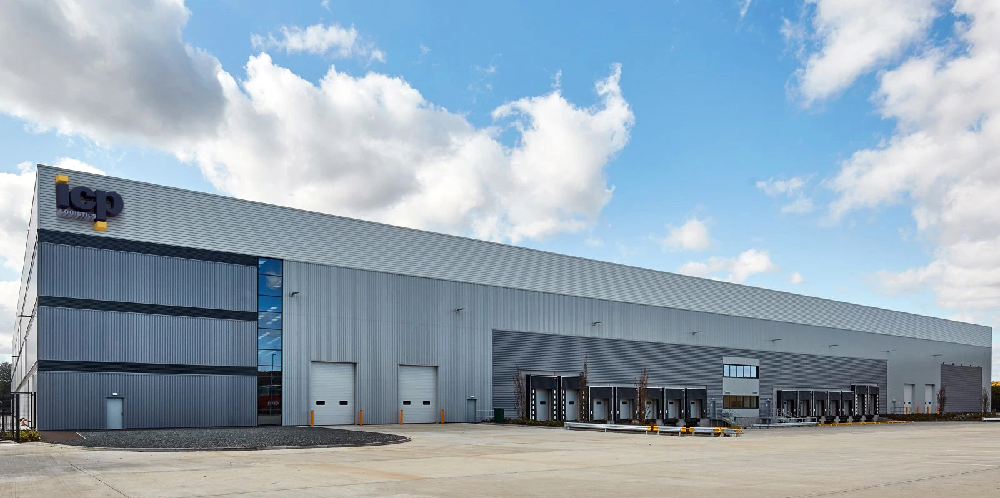
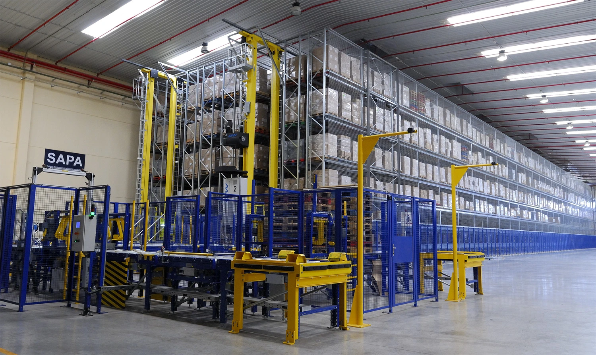

ICP Logistica Commercial Rebuild
A case study in what happens when international expansion begins before the commercial foundation is ready and what changes when data, qualification, targeting and sales execution are rebuilt as one system.

A case study in what happens when international expansion begins before the commercial foundation is ready and what changes when data, qualification, targeting and sales execution are rebuilt as one system.
ICP Logistica had already been operating in the UK for approximately three years when I joined in Q4 2017. The business had an 80,000 sq. ft. warehouse, six smaller clients and the credibility of a major Spanish logistics group behind it. But the UK commercial operation still needed the structure required to turn market activity into repeatable, measurable growth.
My first task was not simply to generate more leads. It was to understand and repair the commercial foundation already in place: cleanse and restructure the CRM, rebuild segmentation and pre-qualification, introduce commercial and competitor analysis, tighten outbound methodology and create a clearer route from first contact to qualified opportunity.
Approximately 10,000 company records required review, cleansing and restructuring. Once poor data, weak segmentation and inconsistent processes are layered together, the mess compounds and becomes increasingly costly to fix.
During this period, commercial performance improved from approximately 10% to 50%, alongside the introduction of stronger qualification, preparation and structured commercial processes.
The UK operation expanded from approximately 80,000 sq. ft. to 300,000 sq. ft. as the business progressed beyond smaller 3PL accounts towards larger enterprise and multinational opportunities.
The wider period saw significant UK operational growth, supported by larger commercial opportunities and client wins, including a multinational contract worth approximately £2m annually across UK and German operations.
A significant part of the first quarter was consumed by commercial remediation rather than new-market development. A three-person sales function had to work through roughly 10,000 company records, rebuild usable segmentation and create the qualification structure needed for future activity.
Records needed cleansing, segmentation and clearer pre-qualification summaries before the database could reliably support targeted outbound work.
Using the salary levels applicable to the team at the time, the commercial function represented roughly £20,500 in gross salary cost across a quarter before employer costs, software, data and management overhead.
The real cost was not only payroll. Time spent untangling the model was time that could not be spent developing, qualifying and nurturing the next generation of UK opportunities.
Cost figures are retrospective illustrative estimates based on historic salary levels supplied for the three-person commercial team. They are not presented as audited ICP expenditure.
The commercial changes introduced after the rebuild began focused on quality over quantity: understanding the company, reaching the right decision-maker, pre-qualifying properly and making each meeting commercially meaningful.
Target sectors, positioning and clearer commercial direction.
Company analysis and financial risk review before the call.
Four-stage gatekeeper approach focused on reaching the decision-maker within four attempts.
Clearer qualification before opportunities were progressed.
A more consistent commercial approach across the team.
Meetings built around discovery, fit and commercial next steps.
Client-facing material redesigned around the opportunity rather than generic capability.
The database rebuilt so future activity could create usable commercial intelligence.
Enterprise business development rarely moves neatly from call → meeting → customer inside the same reporting period. The rebuild began in Q4 2017, opportunities were researched, qualified and cultivated through 2018, and a concentration of client wins appeared in Q1 2019.
Logistics and 3PL operate on comparatively long sales cycles, often requiring operational reviews, commercial qualification and multiple decision-makers before a contract is awarded. The timeline shown here reflects that market; businesses selling services with shorter buying cycles may move through the same research, cultivation and conversion process considerably faster.
Clean the data, segment the market, establish commercial strategy, qualification and structured decision-maker outreach.
Research, qualify and nurture multiple high-potential opportunities simultaneously, building relationships over time rather than judging progress by meeting volume alone.
The strongest opportunities mature over time. Consistent qualification, follow-up and relationship development allow multiple prospects cultivated in earlier quarters to progress into new clients.
Historical commercial performance shown as part of Charlie Owen’s professional portfolio and based on his experience during his time with the UK operation. Client wins should not be interpreted as conversion from meetings held within the same quarter.
From Q4 2017, I led the UK commercial function, rebuilding the commercial infrastructure, prospecting model and opportunity pipeline. New client acquisition during this period was generated through that commercial function. The Companies House accounts provide independent context around the wider financial trajectory that followed.
Reported position at each financial year end.
Figures shown are net assets / (liabilities) reported in publicly filed Companies House accounts and should not be interpreted as turnover. The timeline provides company-level financial context alongside the commercial activity documented in this case study.
The historical strategy shows a deliberate progression in target-company scale. The objective was not simply to generate more conversations; it was to move the UK operation toward progressively larger and more strategically valuable opportunities.

A multinational client was won across UK and German operations in 2020, with the commercial foundation built in the preceding years acting as the stepping stone towards opportunities of this scale.
During this period, the UK commercial operation recorded 200% growth, eight new UK SME businesses were won over one year, the telesales team reduced from three people to one, and conversion improved from approximately 10% to 50%.
The wider UK operation subsequently expanded from approximately 80,000 to 300,000 sq. ft. and moved toward larger blue-chip and multinational opportunities.
It was that data, market intelligence, segmentation, qualification, outreach, pipeline development and client handover work best when they are designed as one connected commercial system.
That experience is one of the reasons the Meridian Elevate Foundation Blueprint begins before outbound activity and why every response is treated as commercial intelligence that should improve the next cycle.
Explore the Foundation Blueprint →The commercial growth documented in this case study was accompanied by a significant evolution of ICP Logistica’s UK operation expanding its footprint and progressing towards greater integration of the automation and technology already used extensively by the wider group in Spain.


Meridian Elevate is the trading name of Charlie Owen, operating as a sole trader. This case study forms part of Charlie Owen’s professional portfolio and reflects his personal experience while working at ICP Logistics, the UK entity of ICP Logística. Company-level information referenced within the case study is drawn from publicly available sources where stated. Meridian Elevate is not affiliated with or endorsed by ICP Logística.
Let's establish your corporate infrastructure and cross-border operations for high-value growth.